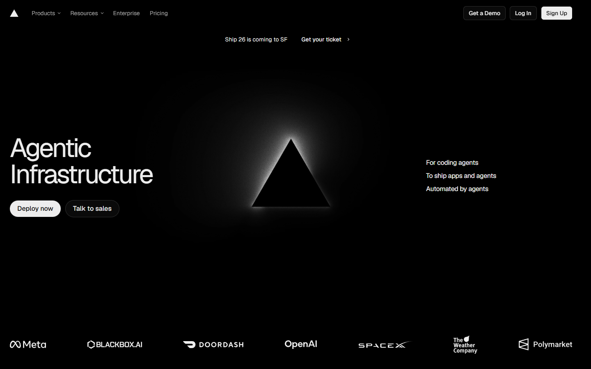
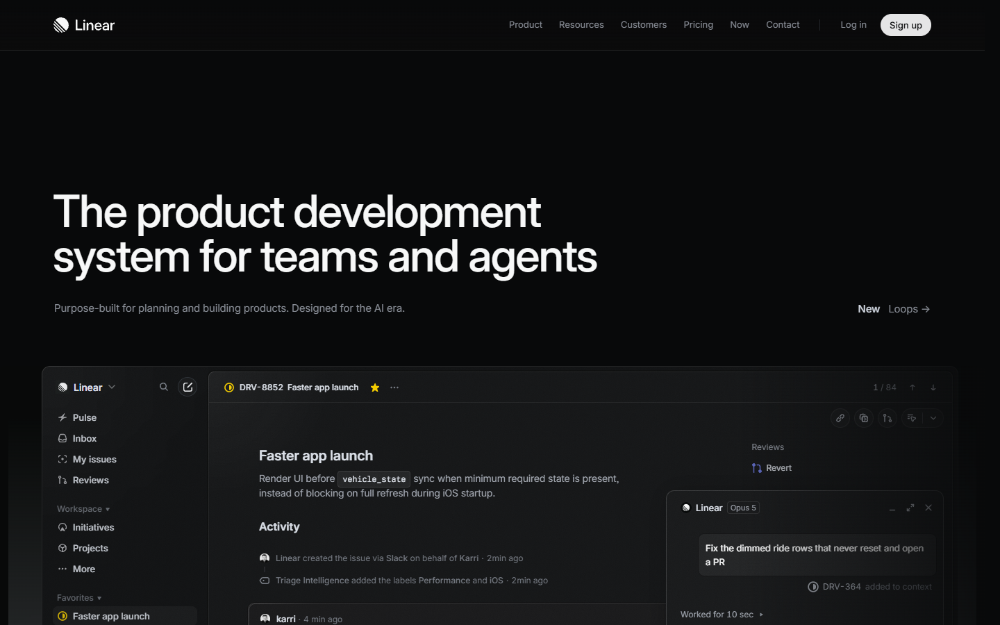
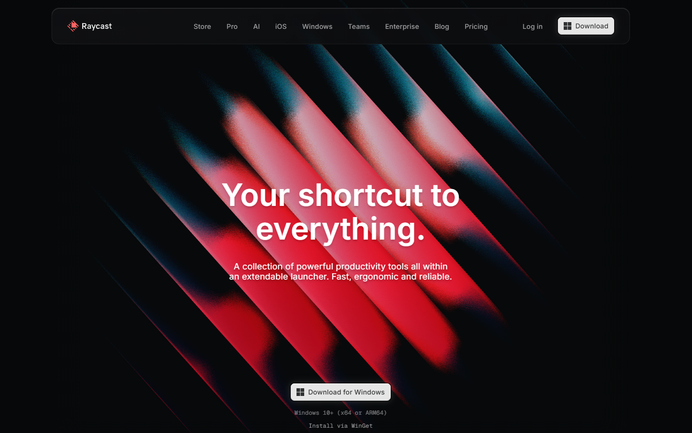

Almost nothing on screen. A black field, one lit object, one line of large type, and a command bar. Depth comes from light and grain, not panels. Precision in the manner of Linear, Vercel and Raycast.



Only the active chain is lit, four or five nodes in a row. Every other dependency is a dim dot until you ask for it.
The number is the object. A diagonal beam of light crosses it and brightens as the shock approaches the threshold.
One dim label, one bright figure. Detail appears on a key press, never by default.
A command bar gives the verdict as a sentence. Enter opens the comparison; S and E switch sides.